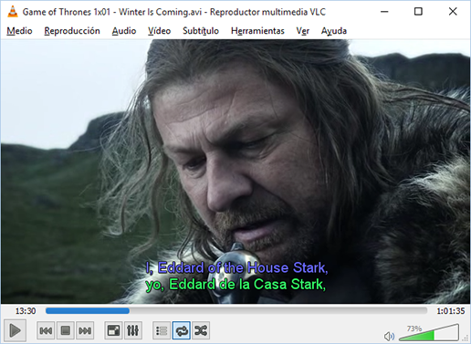
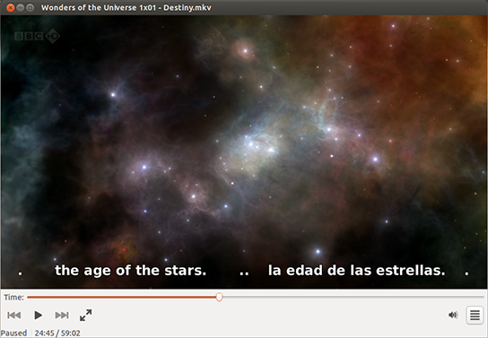
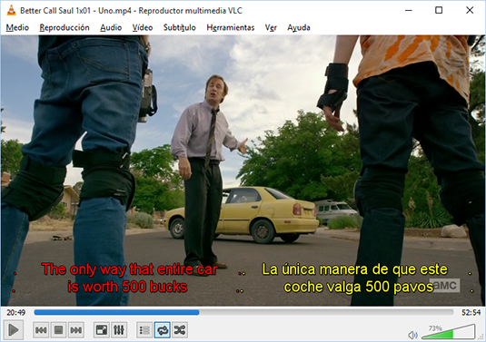
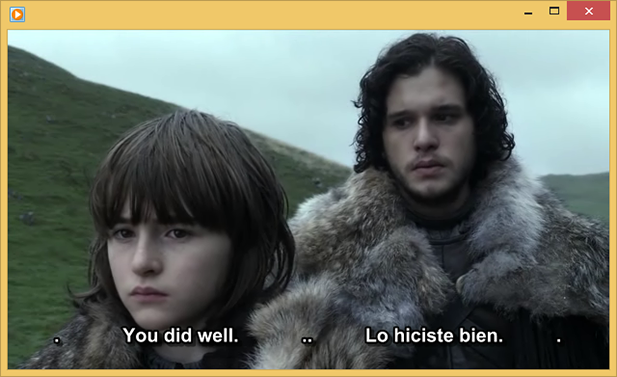
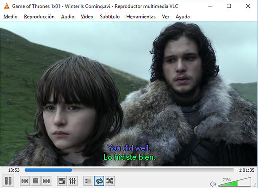
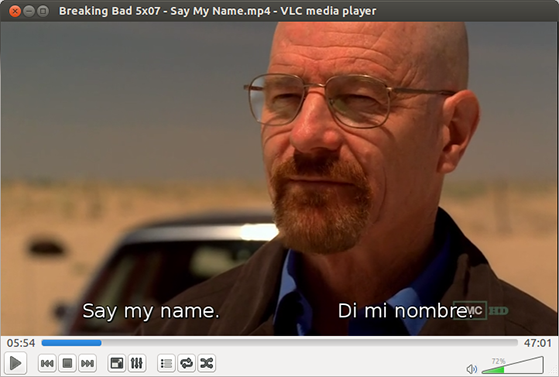
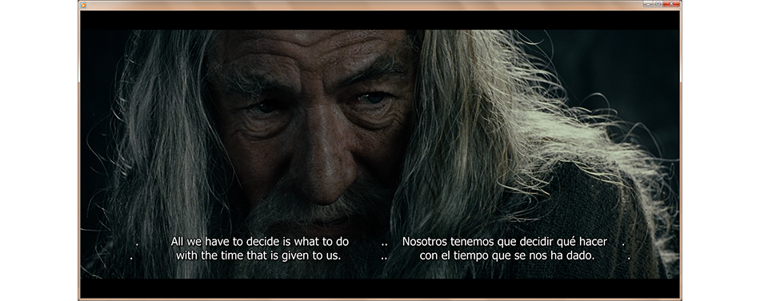

DualSub: Merge and Translate Subtitles
Source codeDualSub 1.1 Released! Includes new features for horizontal and colored subtitles
- 
- 
- 

- 
- 
- 
- 
Getting Started
DualSub is a tool which allows you to merge two SRT subtitles in a single file. The idea of using merged subtitles is to watch movies/series in original version with two sets of subtitles. This can be used to learn a second language while watching movies/series.
MoreGet DualSub
This software is Open Source (GPL v3). You can fork the source code on GitHub. Binary releases for Windows, Linux, and Mac OS X are also available on GitHub.
MoreAbout
DualSub is a personal project of Boni García. Comments, questions and suggestions are always very welcome!
More